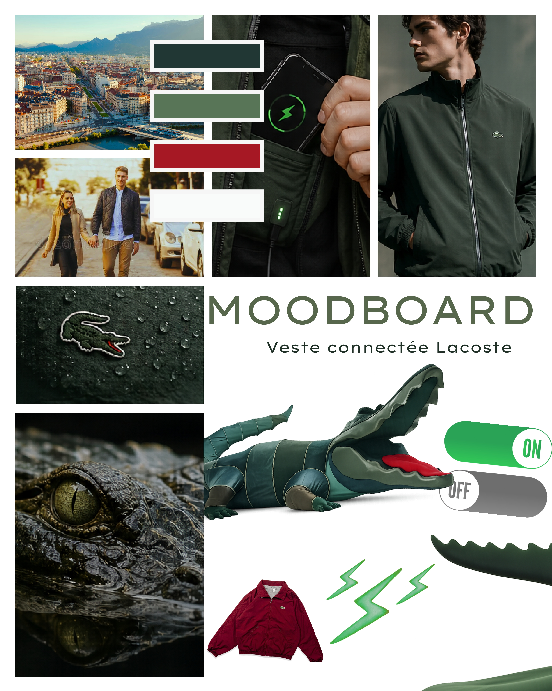
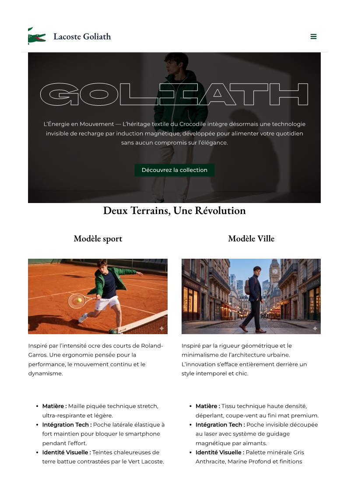

Campagne Lacoste Goliath
Campagne 360° pour le lancement fictif d'une veste chauffante connectée Lacoste : moodboard, création des affiches print, captation et montage du spot vidéo avec VFX After Effects, et site vitrine WordPress.

Palette Chromatique & Codes Visuels Lacoste
Extraite du moodboard et de l'affiche officielle GOLIATH, la gamme chromatique marie l'iconique Vert Crocodile (#004D26) — présent sur la doublure technique de la veste — à des tons chauds Bronze Camel (#B38857) et Crème (#F3EFE0) évoquant la chaleur thermique et l'élégance French Sport.
Allier l'héritage sportif au luxe moderne
Le choix du moodboard s'inscrit dans la continuité de la campagne « Play With Icons » en reflétant l'alliance subtile entre l'héritage sportif intemporel de Lacoste et une vision moderne et décontractée du luxe.
À travers des ambassadeurs aux univers variés (sport, cinéma, musique) et des mises en scène soignées aux teintes épurées, l'univers visuel met en valeur l'innovation technique de la veste connectée.

Conception des visuels publicitaires
Chaque visuel propose une scénographie personnalisée tout en conservant une identité visuelle unifiée, renforcée par l'intégration d'éléments récurrents et identitaires (l'univers du tennis, le crocodile emblématique et la typographie Lacoste).
Site vitrine & parcours e-commerce
Le volet numérique de la campagne s'articule autour d'un site vitrine et e-commerce réalisé sous WordPress (budgétisé à 20 000 € dans notre recommandation d'agence). Il présente la technologie de chauffe de la veste et accompagne l'utilisateur jusqu'à l'achat.

Tournage sur 3 jours, montage & VFX After Effects
Captation vidéo réalisée sur 3 jours. Le montage a été assuré sous Adobe Premiere Pro avec l'intégration d'effets visuels créés sur After Effects pour dynamiser le rythme.